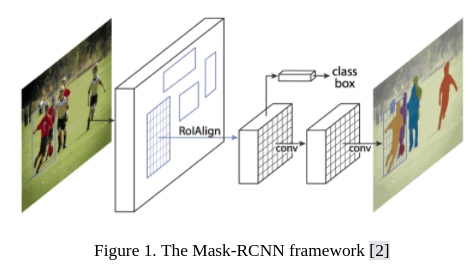
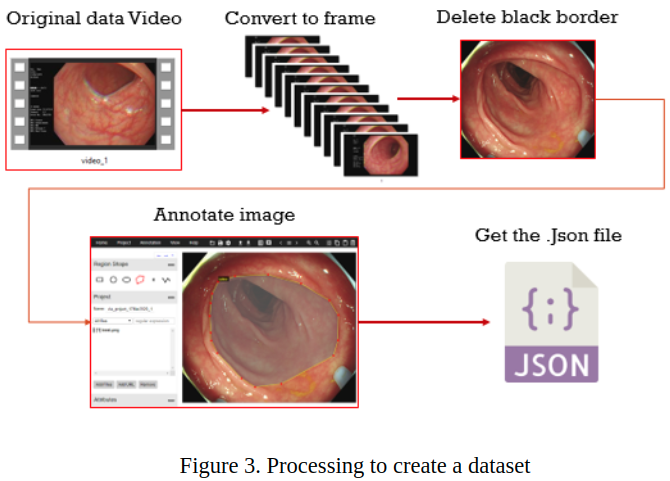
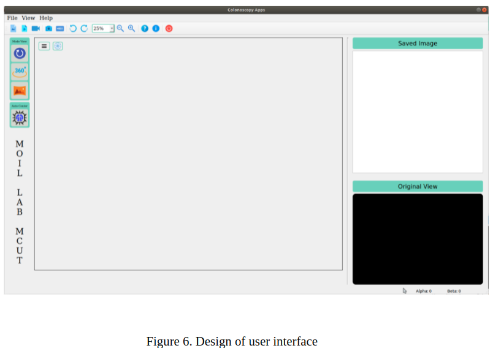
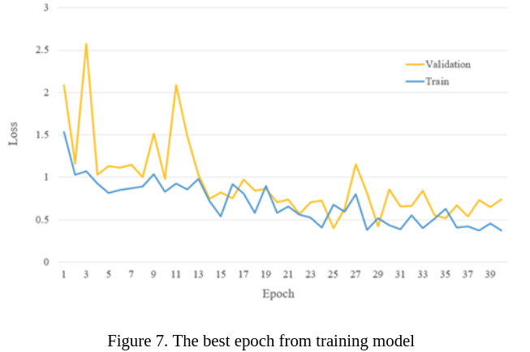
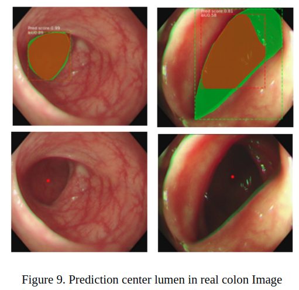
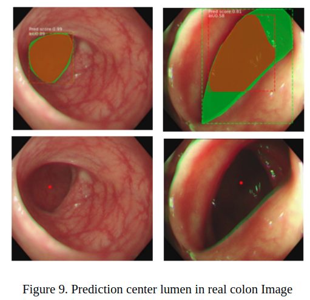
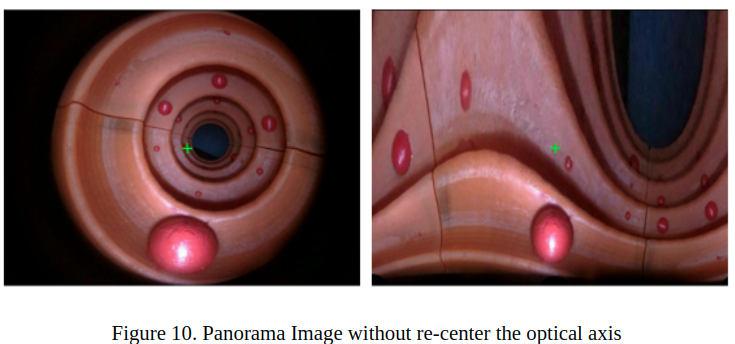
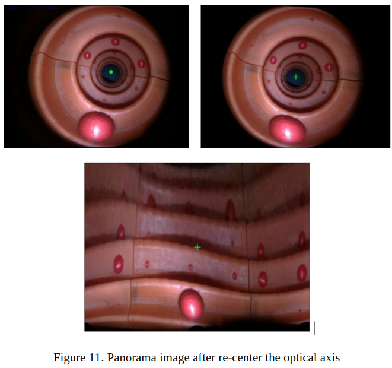
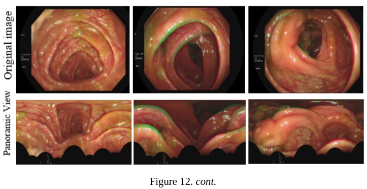
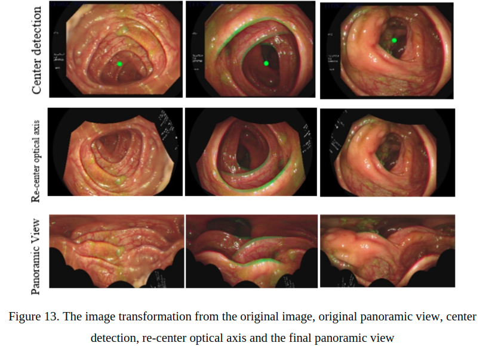

Colonoscopy
Colorectal cancer,
juga disebut CRC, merupakan masalah kesehatan masyarakat yang signifikan di banyak negara. Dengan total 1.096.601 kasus baru yang terdiagnosis di seluruh dunia dan lebih dari setengahnya berakhir dengan kematian selama tahun 2018 menyebabkan KKR menjadi penyebab keempat kematian akibat kanker [1]. Risiko lebih tinggi terkena kanker usus besar adalah untuk orang yang berusia di atas 50 tahun dan mereka yang pernah memiliki kejadian kanker usus besar sebelumnya dalam keluarga mereka. Pertumbuhan jaringan kelenjar di mukosa usus besar, juga dikenal sebagai polip adenomatosa, menyebabkan sebagian besar kasus kanker usus besar. Kebanyakan polip awalnya jinak. Beberapa di antaranya akan menjadi ganas dari waktu ke waktu, yang pada akhirnya menyebabkan kematian jika tidak terdeteksi dan diobati dengan tepat.
Studi ini mengeksplorasi tinjauan mutakhir dari pendekatan komputasi semi-otomatis saat ini untuk meningkatkan tingkat deteksi polip, memperkirakan ukuran polipnya, yang bertujuan untuk mengurangi subjektivitas saat menjelajahi saluran pencernaan. Metode ini menggunakan kamera mata ikan atau kamera sudut lebar dan memprosesnya untuk menghasilkan tampilan panorama untuk menciptakan perspektif yang lebih baik pada gambar kolonoskopi dan mendekati persepsi visual manusia pada umumnya.
Metode yang diterapkan pada penelitian ini mengadaptasi Mask R-CNN [2], yang akan digunakan sebagai detektor lumen pada citra titik dua, yang telah menunjukkan kemajuan akurasi yang cukup besar dalam pendeteksian objek dan segmentasi instance. Deteksi lumen akan mengembalikan koordinat tengah lumen pada gambar titik dua.
Perpustakaan digunakan
Sesi ini akan menjelaskan secara detail tentang library yang digunakan.
a. Moildev
Perpustakaan Moildev adalah kumpulan fungsi yang digunakan untuk mengembangkan aplikasi gambar mata ikan. Perpustakaan ini dikembangkan oleh The MOIL Laboratory di Ming Chi University of Technology, Taiwan, di bawah bimbingan profesor Chuang-Jan Chang. Awalnya perpustakaan ini menulis dalam C++ untuk memanfaatkan kecepatan komputasi yang disediakan oleh bahasa pemrograman ini. Library Moildev memiliki beberapa fungsi, seperti Anypoint mode-1, Anypoint mode-2, dan Panorama. Setiap fungsi memiliki parameter dan kontrolnya sendiri dengan memberikan sudut zenithal dan sudut azimut untuk mencapai wilayah tertentu yang diinginkan.
b. Mask R-CNN
OpenCV stands untuk Perpustakaan Visi Komputer Sumber Terbuka. Ini gratis dan The Mask R-CNN bertindak sebagai jaringan saraf dalam dan berfungsi sebagai pemecah masalah segmentasi instans dalam pembelajaran mesin atau visi komputer. Segmentasi instance adalah tugas untuk mendeteksi objek yang diinginkan pada tingkat piksel yang muncul dalam suatu citra [7]. Model segmentasi instan membuat topeng pixel-bijaksana untuk objek dalam gambar dan memberikan pemahaman yang jauh lebih rinci tentang objek dalam gambar. Teknik Mask R-CNN awalnya adalah Faster R-CNN, kemudian dimodifikasi dengan menambahkan cabang lain untuk memprediksi topeng untuk setiap RoI pada gambar. Cabang tambahan ini sejajar dengan cabang yang ada untuk klasifikasi dan regresi kotak pembatas, seperti yang ditunjukkan pada kerangka metode Mask R-CNN pada Gambar 2.10. Dua subnetwork yang dapat dilatih mengikuti metode Mask R-CNN. Jaringan pertama adalah Region Proposal Network (RPN) yang digunakan untuk menghasilkan proposal objek, dan jaringan kedua akan mengklasifikasikan proposal untuk menghasilkan bounding box dan binary mask untuk setiap proposal objek atau disebut dengan RoI.

Dalam hasil utama, Mask R-CNN melakukan perbandingan menyeluruh dengan keadaan seni dan ablasi komprehensif pada dataset COCO. Tabel 2 membandingkan hasil Mask R-CNN dengan metode state of the art segmentasi instan menggunakan dataset coco. Model Mask R-CNN mengungguli varian dasar dari semua instantiasi model canggih sebelumnya. Pada tabel di bawah, pemenang tantangan segmentasi COCO 2015 dan 2016 yang meliputi MNC dan FCIS.

Mask R-CNN dengan backbone menggunakan ResNet-101-FPN juga mengungguli varian dasar dari semua model lanjutan sebelumnya untuk deteksi objek, termasuk varian model tunggal G-RMI, pemenang COCO Detection Challenge 2016 seperti yang ditunjukkan pada Tabel 3 .

Tujuan Penelitian
Lumen adalah ruang dalam dari struktur biologis tubular, seperti saluran pencernaan dari sistem anatomi manusia dan pengamatan prosedur kolonoskopi yang dilakukan di sepanjang lumen usus besar. Titik tengah lumen adalah titik referensi untuk merekonstruksi titik optik gambar asli sebagai masukan untuk menghasilkan tampilan panorama yang sesuai. R-CNN telah menyediakan model pembelajaran transfer dari dataset coco dan melatih kembali model ini menggunakan dataset kami sendiri. Dataset adalah kumpulan data yang digunakan selama pengembangan deep learning. Ini terdiri dari tiga set data yang berbeda: set pelatihan, set validasi, dan set pengujian.
Penerapan
A. Buat model Mask R-CNN untuk deteksi pusat lumen
Penelitian ini bertujuan untuk mempelajari penerapan teknologi kamera fisheye pada perangkat kolonoskopi dan mengolah citra untuk menghasilkan citra perspektif yang lebih baik sebagai acuan dalam mendeteksi polip dan memperkirakan ukurannya selama prosedur kolonoskopi.

Untuk dataset Mask R-CNN, kita harus membuat anotasi pada semua dataset. Kami membubuhi keterangan lumen atau lubang pada gambar usus besar menggunakan anotator VGG [4]. Gambar 3.7 Menampilkan proses pembuatan dataset dari video hingga mendapatkan file JSON yang berisi informasi gambar.

ResNet101 adalah struktur tulang punggung yang digunakan untuk model Mask R-CNN yang berfungsi sebagai pendeteksi fitur. Tujuan dari model deteksi objek adalah klasifikasi dan lokalisasi. Kita dapat mengevaluasi model pendeteksian objek dengan menggunakan perpotongan over union (IoU) antara kebenaran dasar dan kotak pembatas prediksi. Gambar 3.8 menunjukkan IoU kebenaran dasar dan kotak pembatas prediksi.

Rasio tumpang tindih IoU antara kotak pembatas kebenaran dasar ( Bgt) dan kotak pembatas yang diprediksi ( Bp) harus melebihi 0,5 (50%). Nilai ini akan digunakan sebagai ambang batas untuk deteksi yang dianggap benar. Persamaan untuk menghitung skor IoU berikut ini:

Di mana Bp Bgt mewakili perpotongan antara kotak pembatas prediksi dan kebenaran dasar, sedangkan Bp Bgt adalah gabungannya. Kategori positif benar deteksi objek adalah jika skor IoU mencapai 0,5, sedangkan skor IoU < 0,5 merupakan deteksi palsu dan diklasifikasikan sebagai False Positive (FP). Ketika model gagal mendeteksi objek dalam gambar, itu adalah Negatif Palsu (FN). Bagian dari gambar yang tidak memprediksi objek adalah singkatan dari True Negative (TN). Mengikuti aturan, hitung Precision dan Recall sebagai metrik untuk mengevaluasi kinerja menggunakan persamaan:

Kurva presisi-recall akan mengevaluasi kinerja detektor. Namun, untuk membandingkan detektor yang berbeda ketika kurva berpotongan tidak mudah. Oleh karena itu, perhitungan area di bawah kurva presisi-recall interpolasi dapat digunakan sebagai solusi yang biasa dikenal sebagai AP, yang dapat dihitung dengan rumus berikut:

Di mana Pinterp adalah metode untuk mengurangi dampak goyangan dalam presisi kurva vs. penarikan. Presisi tertinggi yang ditemukan untuk setiap tingkat recall r′≥r , adalah presisi interpolasi Pinterp pada tingkat recall tertentu r yang dapat dihitung dengan persamaan:

setelah mengevaluasi model, kemudian menggunakannya untuk memprediksi pusat lumen pada gambar usus besar. Dalam penelitian ini koordinat lumen center merupakan hasil tujuan. Untuk mendapatkan bagian tengah dari lumen usus besar, kami menggunakan kotak pembatas dari hasil prediksi. Kotak pembatas yang dihasilkan oleh Mask R-CNN dinyatakan dengan (x1, y1, x2, y2) dimana x1, y1 adalah titik pertama, dan x2, y2 adalah titik kedua untuk membuat persegi panjang. Titik tengah persegi panjang adalah koordinat pusat dari prediksi lumen titik dua, yang dapat dihitung dengan persamaan:

B. Pemandangan panorama
Kamera yang memiliki lensa FOV sudut lebar ini merupakan kandidat ideal untuk menghasilkan tampilan panorama. Pemandangan panorama dapat menghadirkan pemandangan horizontal dalam lingkungan tertentu yang terbenam untuk memenuhi persepsi visual manusia pada umumnya. Dalam menghasilkan panorama dari kamera fisheye, intensitas titik yang dicitrakan (u,v) dipetakan ke bola kecil dan dikodekan sebagai (α,β) seperti yang ditampilkan pada Gambar 3.12. Proyeksi silinder gnomonik akan memproyeksikan bagian dari citra global ke permukaan silinder berdasarkan proyeksi kartografi. Segmen citra radial pada belahan bumi akan ditampilkan sebagai garis lurus jika permukaan silinder bersinggungan dengan ekuator. Pemandangan panorama dicapai dengan membuka permukaan proyeksi silinder menjadi bidang persegi panjang

C. Desain antarmuka pengguna
Perancangan user interface dapat dilihat pada gambar dibawah ini.

Hasil
Dari tahap pelatihan, perbandingan antara pelatihan Loss dan validasi untuk setiap epoch ditampilkan pada kurva belajar yang dapat dilihat pada Gambar 4.1. Sebuah fungsi kerugian mengkuantifikasi seberapa baik atau buruk prediktor yang diberikan dalam mengklasifikasikan data input dalam kumpulan data. Semakin kecil kerugiannya, semakin baik pekerjaan pengklasifikasi dalam memodelkan hubungan antara data input dan target output. Pada Mask R-CNN fungsi loss didapat dari kombinasi loss klasifikasi, lokalisasi, dan segmentasi Mask. Mengikuti kurva belajar untuk kehilangan pelatihan, itu menunjukkan peningkatan dan sama dengan kurva belajar untuk kehilangan validasi yang mengalami peningkatan, tetapi kesenjangan besar tetap ada di antara kedua kurva. Hal ini menunjukkan bahwa dataset memiliki masalah, dataset pelatihan tidak memberikan informasi yang cukup untuk mempelajari masalah dengan sangat tepat. Ini juga terjadi ketika set data pelatihan memiliki terlalu sedikit instance dibandingkan dengan set data validasi.

Dari hasil pelatihan, kita dapat memilih model terbaik yang diperoleh. Model terbaik adalah skor kerugian terendah dari sejarah fase pelatihan yang akan disimpan ke dalam file Hierarchical Data Format (HDF) 5, yang meliputi bobot model, arsitektur model, detail kompilasi model (kerugian & metrik), dan status pengoptimal model di mana memiliki Ekstensi (.h5)
 

Seperti dijelaskan di bagian 3.4, pemandangan panorama dicapai dengan membuka permukaan proyeksi silinder menjadi bidang persegi panjang untuk memenuhi persepsi visual manusia yang umum. Gambar dengan sumbu optik posisi tidak di lumen tengah akan menghasilkan pemandangan panorama yang buruk.

Kita harus meningkatkan gambar input dengan memusatkan kembali sumbu optik pada gambar asli ke tengah lumen. Selain itu, pusat lumen diperoleh dari prediksi menggunakan metode Mask R-CNN.

Gambar di bawah ini menunjukkan beberapa contoh hasil dalam menghasilkan tampilan panorama dari gambar asli, tampilan panorama sebelum mengubah gambar sumbu optik, deteksi tengah, pemusatan ulang gambar, dan hasil tampilan panorama yang ideal.

Kesimpulan
Proyek ini bertujuan untuk memproses gambar kolonoskopi untuk meningkatkan tingkat deteksi polip, memperkirakan ukuran polipnya, dan mengurangi subjektivitas saat menjelajahi saluran pencernaan. Kami mengusulkan metode baru yang disebut panorama untuk menampilkan gambar kolonoskopi. Pemandangan panorama dicapai dengan membuka permukaan proyeksi silinder menjadi bidang persegi panjang. Untuk mendapatkan pemandangan panorama yang ideal dari gambar kolonoskopi, kita harus meletakkan kamera sumbu optik di pusat lumen usus besar. Dengan demikian, rekonstruksi sumbu optik gambar sangat penting. Semua operasi menggunakan perpustakaan Moildev, yang merupakan perpustakaan asli yang dikembangkan di lab MOIL.
Untuk merekonstruksi gambar sumbu optik di usus tengah lumen, kita harus mendeteksi usus besar lumen dan mengembalikan koordinat pusat. Kami mengadopsi teknologi deteksi objek Mask R-CNN yang terhubung ke Resnet101 sebagai tulang punggung. Model ini menghasilkan skor AP dengan nilai threshold 0.5 adalah 0.82(82%), threshold 0.75 adalah 0.65 (65%), dan threshold > 0.9 adalah 0.23(23%). Model ini cukup untuk memprediksi koordinat lumen pusat sebagai acuan untuk merekonstruksi sumbu optik suatu citra.
Metode yang diusulkan telah menunjukkan hasil yang menjanjikan dengan menawarkan gambar usus besar dalam bidang persegi panjang dan dekat dengan persepsi visual manusia yang umum membuatnya lebih mudah untuk mendeteksi polip dan memperkirakan ukurannya dengan benar. Hasil ini dapat menampilkan ukuran objek dengan perspektif yang sama seperti aslinya tanpa terpengaruh oleh distorsi dan jarak objek ke kamera.
Anda dapat menjalankan proyek ini melalui aplikasi plugin MoilApp panggilan kolonoskopi, sebelum Anda menjalankan Anda harus mengatur lingkungan yang diperlukan. Anda dapat mengunduh atau mengkloning MoilApp dari repositori GitHub ini https://github.com/MoilOrg/MoilApp